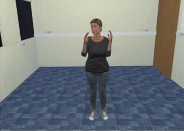
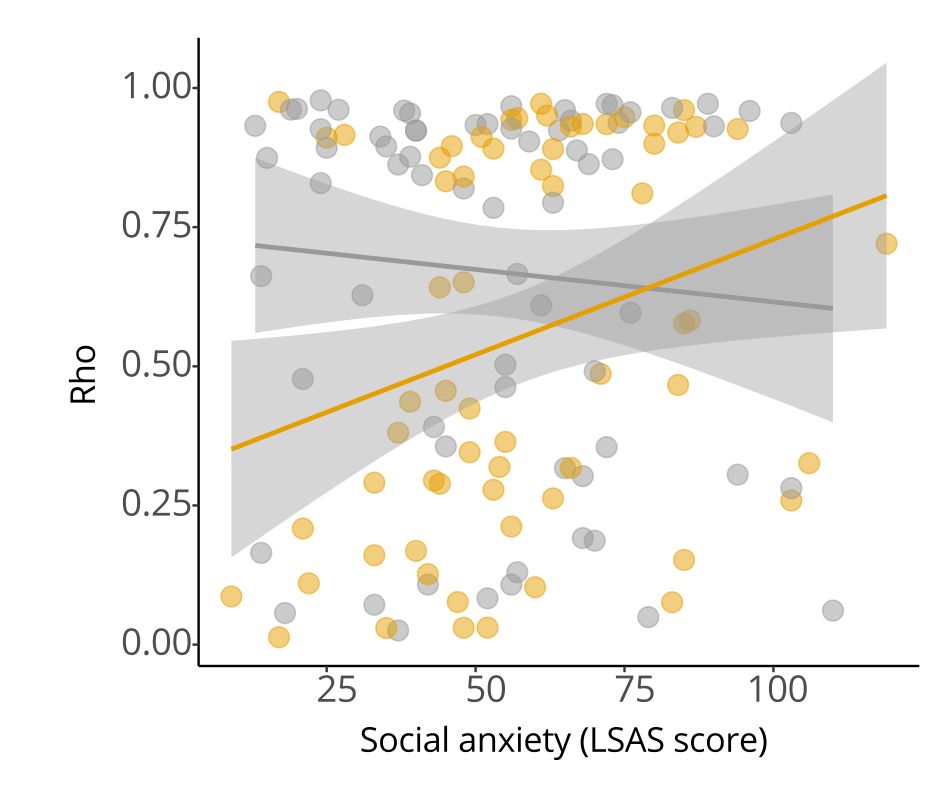
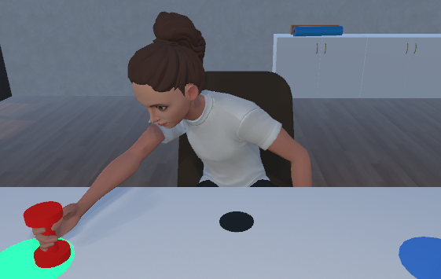
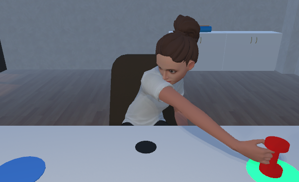
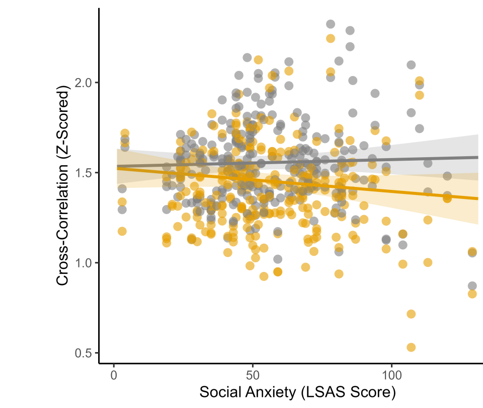

Core Social Process
It is a fundamental feature of social exchange.
Interpersonal coordination is the alignment of behaviour between people during interaction, expressed through movement, speech, and physiology.

It is a fundamental feature of social exchange.
When people coordinate, they often like each other more and feel a stronger connection.
Coordination is associated with greater willingness to help and cooperate.
Mental health symptoms and neurodiversity can also shape how coordination unfolds.
Using VR to manipulate partner gaze to examine whether this shapes the relationship between anxiety and coordination.



Higher social anxiety predicted more stable coordination in the averted-gaze condition — reduced social scrutiny facilitated coordination.



Higher social anxiety predicted an even larger drop in coordination with incongruent cues — the disruption was amplified.
Coordination in everyday life is more complex, multimodal, and socially embedded.

Facial and upper body coordination both increased as background noise rose — suggesting coordination may facilitate communication under difficult conditions.